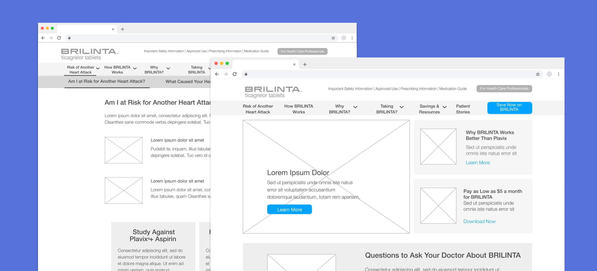
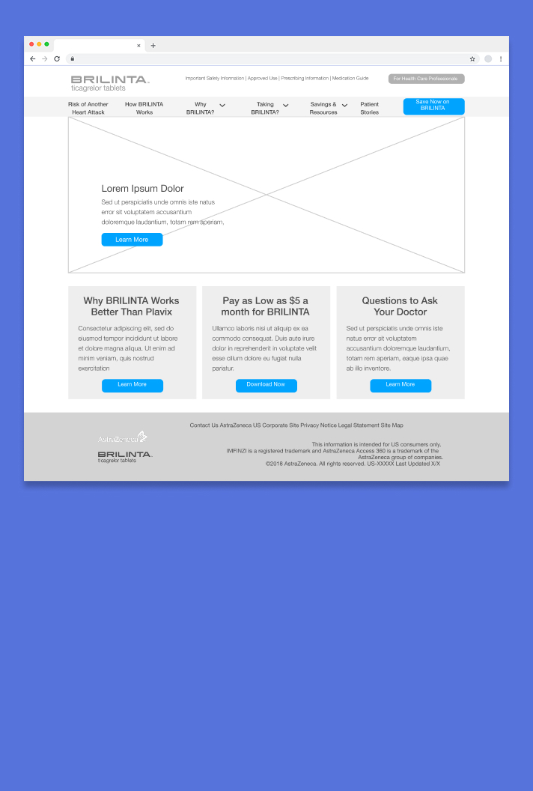
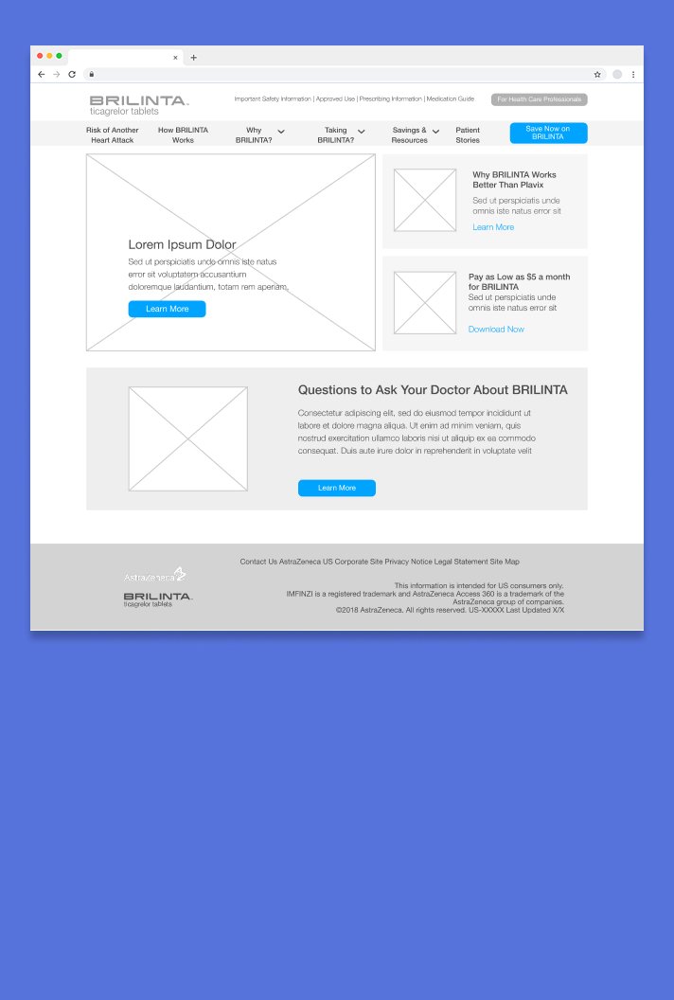
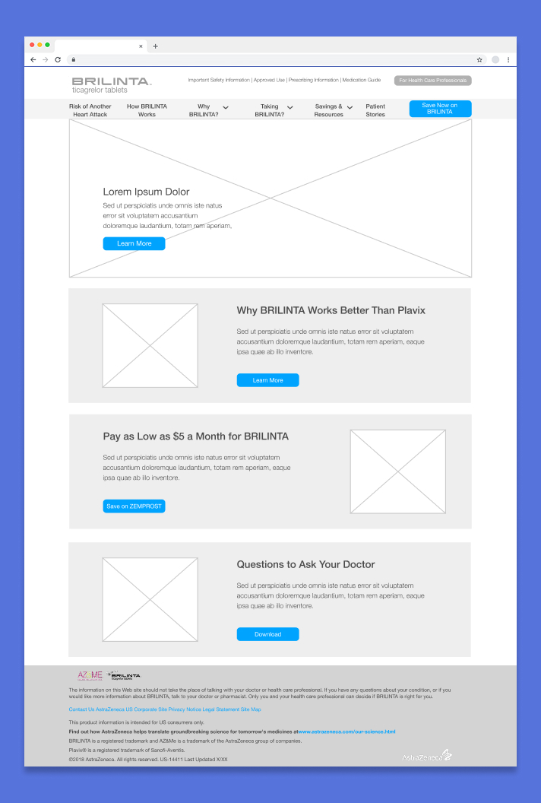
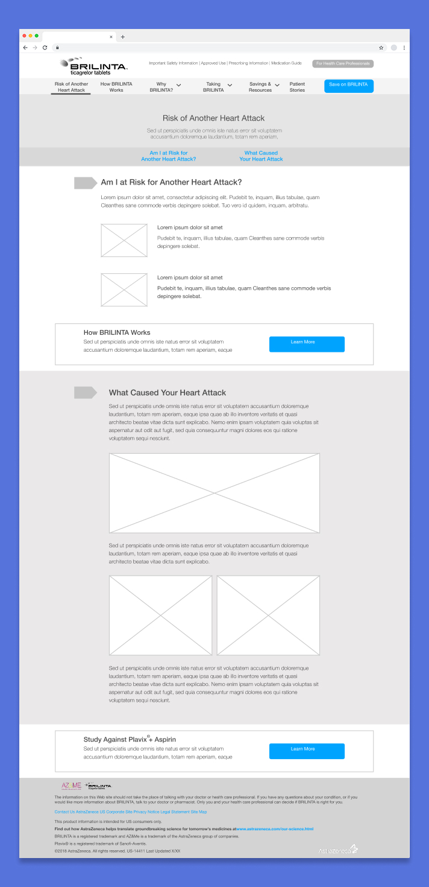
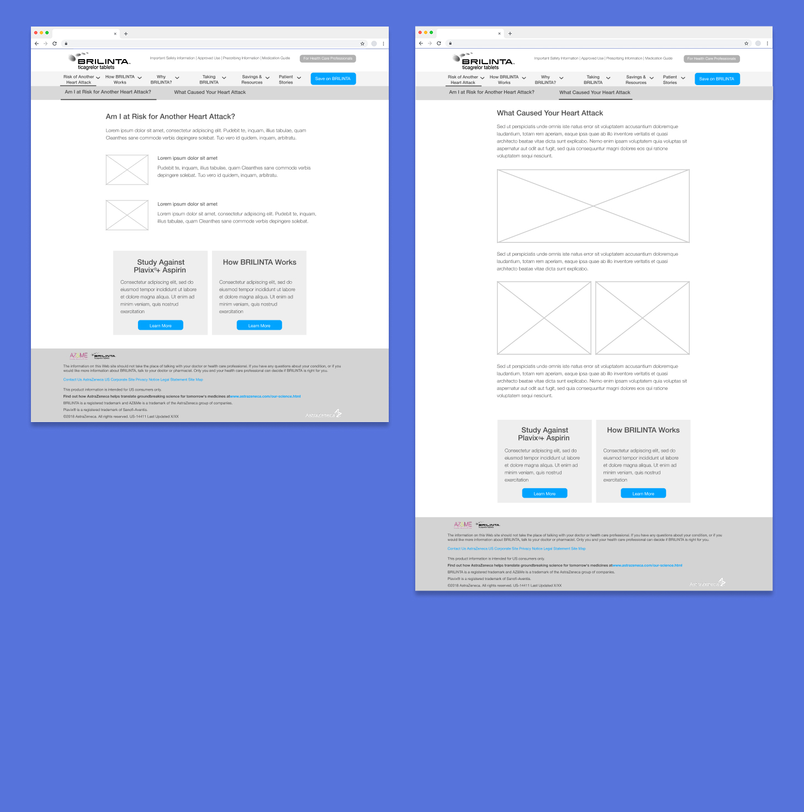
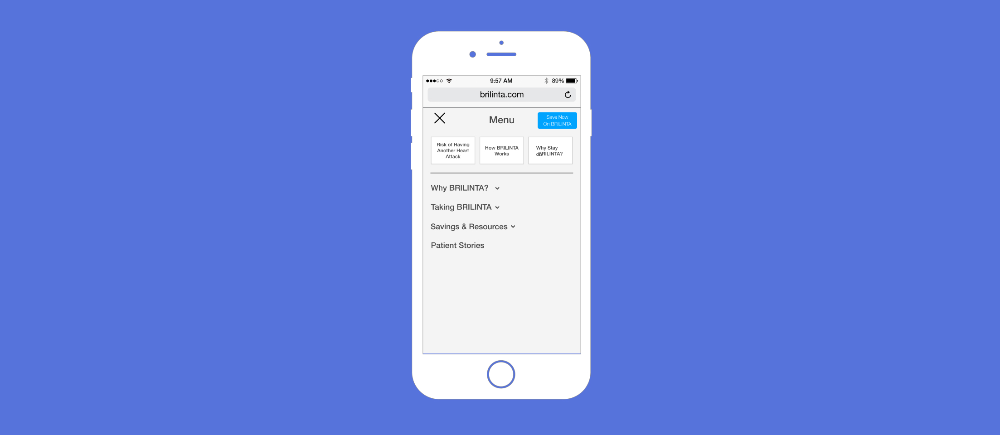

Redesigning BRILINTA.com
Overwhelmed by stress, patients were abandoning research into heart attack treatment. By reducing cognitive load through navigation and content strategy, user engagement increased.

Prospective patients quickly found themselves stressed using the existing site
A number of issues with the existing site made it difficult for users to create a mental model for browsing and finding the information they were looking for;
Inconsistent Page Navigation - Some pages used anchor links while other split content across multiple pages. Navigation labels in the menu didn’t always clearly correspond with the content on the page.
Poor Visual Hierarchy - Some pages used anchor links while other split content across multiple pages. Navigation labels in the menu didn’t always clearly correspond with the content on the page.
BRILINTA is intended for people who have had already had a heart attack and are trying to prevent another one. In this circumstance, research can be stressful and patients (particularly men) will often put off or quickly quit research. A clean and clear design that doesn’t give user’s an excuse to quit is a must.
Improved site navigation to align with patient priorities
The existing site's navigation was unclear and didn’t align with patients' priorities of understanding the what, why, and how of their treatment. To address this, I conducted a comprehensive content audit, integrating input and additions from the copy team. I then reorganized the content into sections that answered key patient questions, such as "Why take BRILINTA?", "How does it work?", and "How do I take it?"

An early iteration of the sitemap
Give clear calls to action to users immediately
Many potential patients find the site through SEO and research showed that the home page didn't always make it clear to them what BRILINTA treated and who it was for. To fix this, I designed a series of home page options with clear calls to action that focused on user's highest priorities (what is BRILINTA?, how to pay for it and how to ask my doctor about it).

Option 1 - A large hero image with three calls to action underneath

Option 2 - Two of the CTAs are pulled into the hero space, giving higher priority to those two pages

Option 3 - CTAs are stacked on top of each other underneath the hero space, giving them more space to provide information, but requiring users to scroll to see all of them
Create content that's easy to read and scan
For content pages, the designs prioritized readability and scannability, featuring large headlines, clearly defined content sections, and generous white space. Ahead of testing, I narrowed the designs to two template concepts: long, scrollable landing pages with multiple content sections, or a multi-page format with the content split across several child pages.

Landing Page - A long landing page with multiple pieces of related content, which are navigated using anchor links. Sections are distinguised through visual cues (different background color), as well as large headlines titling the content.
This concept is beneficial to users who don’t know much about BRILINTA, as content is contained in one location, making it easy to scroll and scan the page. This often results in users finding information they didn’t know they would be interested in.

Multi-Page - Content split among smaller child pages, which are reached through a sub-navigation that is always present in the header of the page.
Although it requires more clicks, the content presented is clearly defined and require little scrolling and searching by the user.
Highlight most visited pages with dynamic menu
On desktop, I used a standard dropdown navigation pattern, keeping the global options in the header and revealing the sub-sections on mouse hover. Mobile navigation uses a hamburger menu that was always available in the header. In addition to a standard accordion style menu, I also designed a more dynamic option. The top of the menu highlights the three content sections that are most important to users with buttons above the content menu. These sections would be chosen based on user traffic, displaying the three that were most visited by users. If traffic changed over time, so would these buttons.

Dynamic Menu - The most popular pages would be highlighted at the top of the menu, changing automatically based on user traffic.
Users strongly preferred drilling down to find content versus scanning
After receiving client approval on the designs, I conducted 30-minute, one-on-one remote test sessions with six patients & caregivers.Users were asked to complete a series of five tasks (e.g. “starting from the home page, how would you find study results for BRILINTA?”), sharing their screens with the team as we watched them complete the tasks. They had few problems, crediting the clear calls to action on all of the home page concepts and the straightforward and easy to understand navigation titles.
Users strongly preferred smaller child pages for the content pages. They said that when they were doing treatment research, they were usually looking for answers to specific questions, so drilling down to a page with the exact piece of info was better than having to scan a longer one. They didn't want to have to scan the page looking for the content they needed and were likely to give up if they didn't find it quickly. The dynamic mobile menu concept proved to be popular with users, as they appreciated the subtle guidance of quickly seeing the most popular pages.
Results
The feedback that we received from users was implemented into the finalized wireframes and eventually the final design. The site launched shortly after and has been well-received by users.
This project was a good learning moment. Early in the design process, I was skeptical that a concept based on numerous child pages would be successful. Long scrolling pages have become fashionable over the past few years and I felt that it was in line with the focus on readability and scannability I wanted for the site. Only after seeing the user feedback did I realize that new trends aren’t always the right solution.